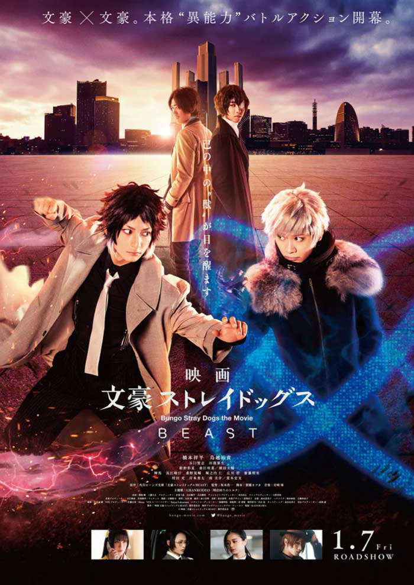

BUNGOU STRAY DOGS
SIPNOSIS
BUNGOU STRAY DOGS cuenta la historia de La Agencia De Detectives , tambien conocida como ADA, es una organización con miembros poseedores de habilidades sobrenaturales. La ADA se enfrentará con problemas que el ejercito no puede manejar; siendo capaces de resolver asesinatos e incluso defender a Yakohama de problemas con otras organizaciones como la Port Mafia o GUILD
Bungou stray dogs es un manga creado por Kafka Asagiri e ilustrado por Sango harukawa. Este manga es serializado por la revista YOUNG ACE desde el 2012
Los personajes están basados en escritores populares y sus obras, debido al fanatismo de Kafka por la literatura no solo japonesa, ya que tambien hay referencias a la literatura, Europea e incluso Estado Unidense.
Actualmente el manga contiene 22 volumenes y 101 capitulos
Contiene 8 novelas ligeras
Bungou stray dogs: La Historia No Contada De La Fundación De ADA
Bungou Stray Dogs: Fifteen
Bungou stray Dogs: Storm Bringer
Bungou Stray Dogs: Dazai Osamu Y La Era Oscura
Bungou Stray Dogs: Examen De Entrada De Dazai Osamu
Bungou Stray Dogs: 55 minutos
Bungou Stray Dogs: BEAST
Bungou Stray Dogs: Gaiden
Contiene un videojuego movil producido por Ambition Co, llamado Bungou Stray Dogs: Tales Of The Lost.
Bungou Stray Dogs fue adaptado al anime en 2016 por la casa animadora BONES. Actualmente el anime contiene 3 temporadas (junto a una cuarta temporada en produccion), 1 OVA, 1 pelicula y un Live-Action
TEMPORADAS (Seleccione la imágen para ver más)

PERSONAJES
AGENCIA DE DETECTVES
- Atsushi Nakajima
- Dazai Osamu
- Doppo Kunikida
- Rampo Edogawa
- Kenji Miyazawa
- Kyouka Izumi
- Akiko Yosano
- Yukichi Fukuzawa
- Jun'ichirō Tanizaki
- Naomi Tanizaki
- Kiraki Haruno
PORT MAFIA
- Chuuya Nakahara
- Ryūnosuke Akutagawa
- Mori Ogai
- Ichiyō Higuchi
- michizo Tachihara
- Kōyō Ozaki
- Gin Akutagawa
- Q
- Elise
- Oda Sakunosuke
PAGINA CREADA POR PAULA CAROLINA RINCÓN GIL 9A